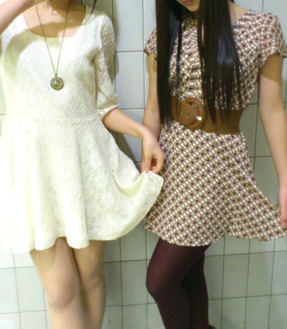

ほいっ、こんばんは★
まひろですぅ。 =・ω・=
昨日は、個別握手会でした♪
忙しい中 遠くから来ていただき
本当にありがとうございます^^
本間に、 表現にはちゃんと
この気持ち表せてなかったかもしらんけど
まひろのレーンに来てくれたり
違うレーンから話かけてくれたり
遠くから手を振ってくれたり
めっちゃ嬉しかったです(*^^*)
握手会☆今日だけぢゃないし
今日これなかったかた方々も
また 東京や大阪などにも行くし
これから握手会、
いっぱいしていくので、
是非来てくださいね(・ε・`)♪
みんなに会えるのを
まひろ すごい楽しみにしとるっ=・ω

今日の個握の時着てた服♪
どっちがまひろで
どっちが誰でしょうっ(⌒ω⌒)？
あっ、それと来て頂いた方に質問っ
(^o^)/
昨日の握手会、どうでしたか？♪
ほんでねっ、
夜は名古屋に泊まってました・ω・
せいらりんと寝ました♪
なつかしいぃぃ
上京したてはね
10月〜11月の１ヶ月間は
せいらりんと二人で過ごしていたから...(^_^)
あっ あれやっ))
昨日の晩御飯はねえ
ヂャヂャーン★☆★
・・・
って皆との写真を載せたいところですが、
一枚しか貼れないので、
またすぐ更新するんで、
次に貼ります^ω^
ぢゃーあねっ(*^^*)のし